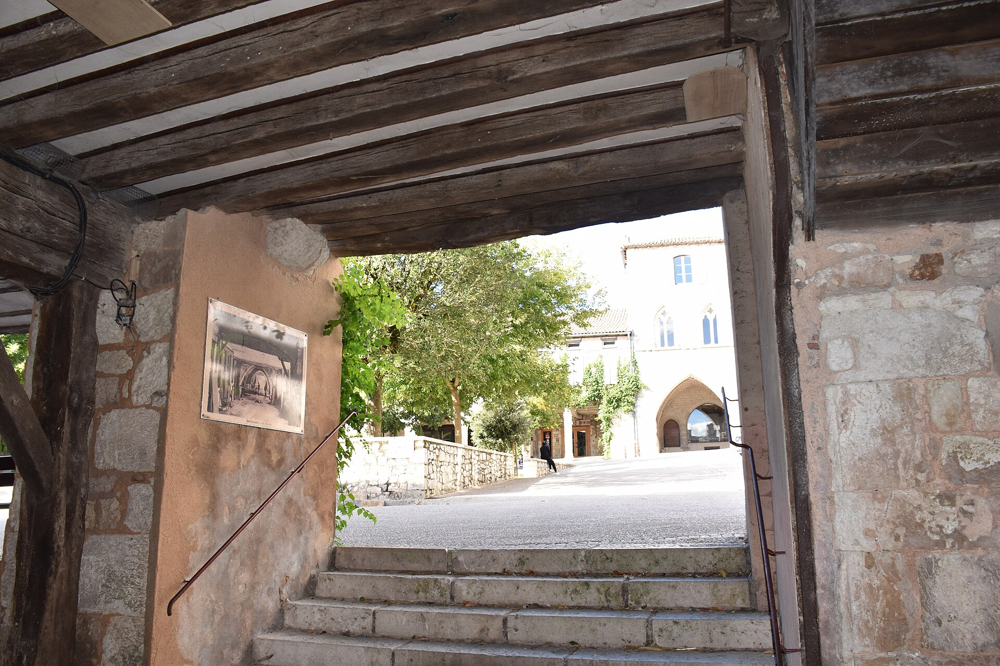
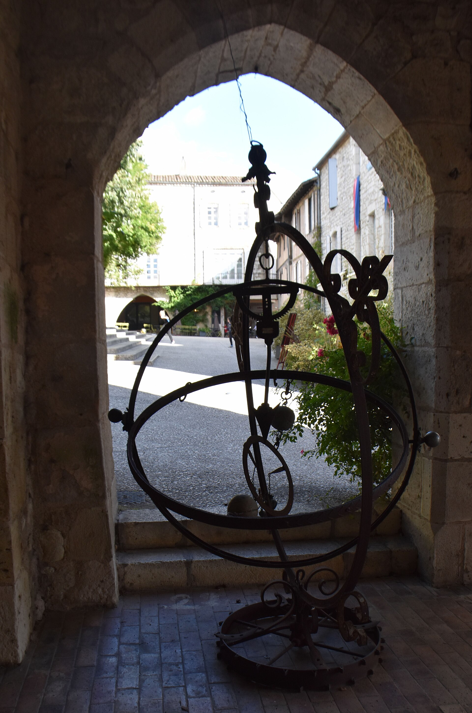

Découvrez Monflanquin
Une bastide faite pour flâner
Perchée sur une colline du Lot-et-Garonne, Monflanquin est une bastide fondée en 1256. Promenez-vous sous ses arcades de pierre, parcourez les carrerots et profitez du rythme tranquille de la place des Arcades.
Place des Arcades
Le cœur de Monflanquin, avec ses arcades médiévales, ses terrasses, ses commerces et ses rendez-vous locaux.

Recoins cachés
Des siècles d’histoire se dévoilent au fil des ruelles.

Un village à explorer
Passages pleins de charme, artisans et petites places invitent à prendre son temps.
Du lac au village
Une belle région, tant à découvrir
UNE BASTIDE DEPUIS 1256
Des arcades, des carrerots et une vue sur la campagne
Monflanquin a conservé la structure caractéristique d’une bastide du Sud-Ouest : une place centrale entourée d’arcades, des rues qui se croisent et de très étroits passages appelés carrerots. Le village se découvre mieux à pied, en regardant les détails des façades et les échappées vers le paysage.
Prenez le temps de pousser jusqu’au Musée des Bastides pour mieux comprendre comment ces villes neuves médiévales ont été imaginées.
VIVRE LE VILLAGE
Marchés, terrasses et plaisirs du Sud-Ouest
Les jours de marché, les rendez-vous de producteurs, les restaurants et les animations évoluent au fil de l’année. Consultez le programme officiel avant votre séjour et gardez une place pour l’imprévu.
SAVEURS
Goûter le terroir
Produits locaux, spécialités régionales et tables de village donnent une autre dimension aux journées de découverte.
HISTOIRE
Comprendre les bastides
Le Musée des Bastides, installé au cœur du village, raconte l’histoire et l’organisation de ces cités médiévales.
À PIED
Flâner sans itinéraire
Depuis la place, laissez les ruelles et carrerots vous conduire vers les points de vue, les façades anciennes et les ateliers.
AUTOUR DE MONFLANQUIN
Des idées pour prolonger la découverte
La vallée et les bastides alentour permettent d’alterner patrimoine, paysages et journées très tranquilles.
PATRIMOINE
Châteaux et villages
Les châteaux de Bonaguil, Biron ou Gavaudun comptent parmi les idées de sortie emblématiques autour des bastides.
PLEIN AIR
Chemins, champs et forêts
Choisissez une balade selon la météo et découvrez un paysage de collines, cultures et petits bois.
SAVEURS
Une journée au rythme local
Associez marché, déjeuner en terrasse, musée ou atelier d’artisan pour découvrir la région sans courir.
Les temps de trajet, jours d’ouverture et billets doivent être vérifiés sur les sites officiels avant le départ.
Le village complète naturellement le séjour
Gardez les horaires et événements flexibles : l’office de tourisme publie les informations les plus récentes.